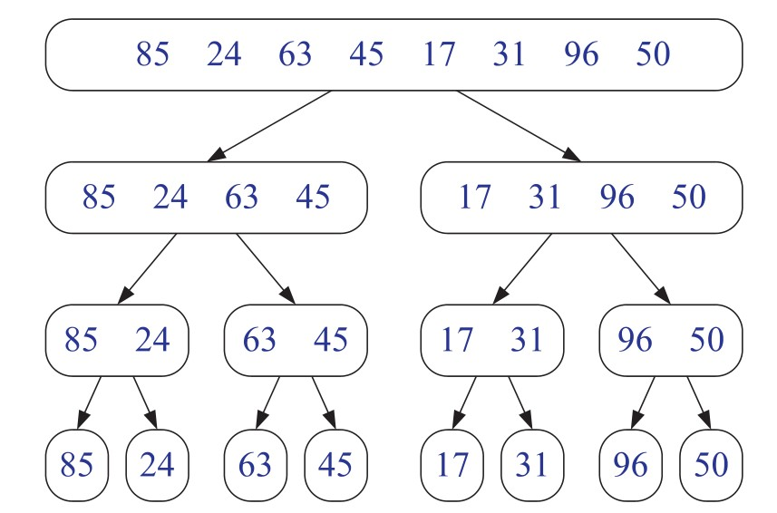

Frank Coelho de Alcantara
O Insertion Sort interage por uma lista de itens e cada um destes itens é inserido em uma lista de itens na posição correta.
Use o Insertion Sort apenas para conjuntos de dados pequenos e com baixa entropia.
\\entrada conjunto A com n elementos
\\saída conjunto A de n elementos ordenados
ordene(A)
for i=1 até n-1
inserte(A, i, A[i])
inserte(A, posição, valor)
i = posição - 1
while (i >= 0 E A[i] > valor ) do
A[i+1] = A[i]
i=i-1Fonte: o autor (2020)
O algoritmo Merge Sort é uma aplicação do padrão de construção de algoritmos dividir & conquistar.
Se o conjunto $A$ tem zero, ou um elemento, retornos o conjunto $A$ já que ele já está ordenado. Você não consegue ordenar conjuntos vazios ou unitários. Caso a cardinalidade do conjunto $A$ seja maior que $1$, dividimos este conjunto em dois, $A_1$ e $A_2$ com cardinalidade proxima da metade da cardinalidade de $A$.
Recursivamente ordene os itens de $A_1 e $A_2.
Junte, merge, $A_1 e $A_2 em $A.

Fonte: (GOODRICH; TAMASSIA; MOUNT, 2011)
mergeSort(S)
\\entrada conjunto A com n elementos
\\saída conjunto A de n elementos ordenados
if A.size() > 1
(A1, A2) ← partition(A, n/2)
mergeSort(A1)
mergeSort(A2)
S ← merge(S1, S2)Fonte: o autor (2020)
Baixe o material de apoio clicando aqui